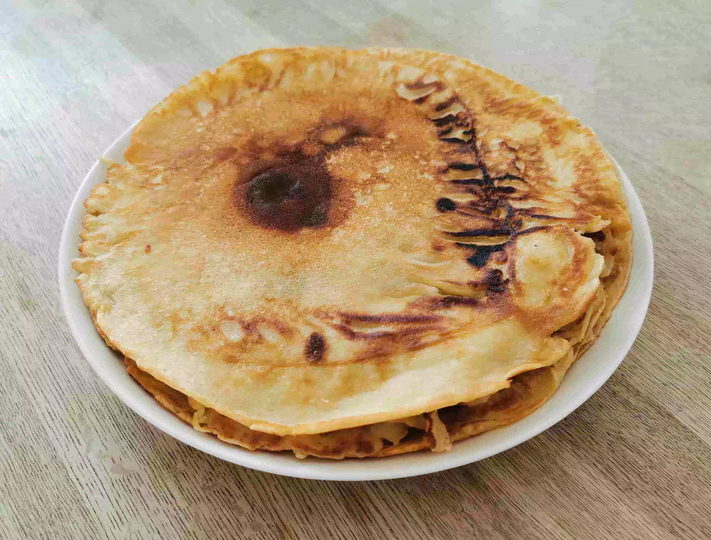

Danish Pancake

Description
This is a recipe for delicious danish pancakes
Ingredients
- 375g wheat flour
- a little bit of salt (1/3 of a teaspoon)
- 1 ½ tablespoon sugar
- 9 dl milk
- 4 eggs
Steps
- Put all the ingredients in a bowl and stir until it’s all mixed up.
- Preheat a pan with butter or margarine.
- Turn when one side starts turning brown.
- They are done when both sides start turning brown.
- Add Butter or Margarine when needed.
This recipe is courtesy of Jesper from publicdomainrecipes.com
Home